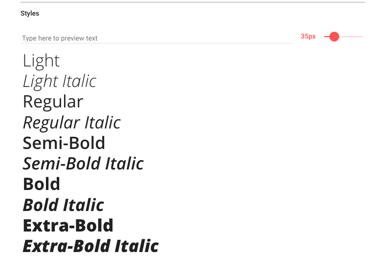
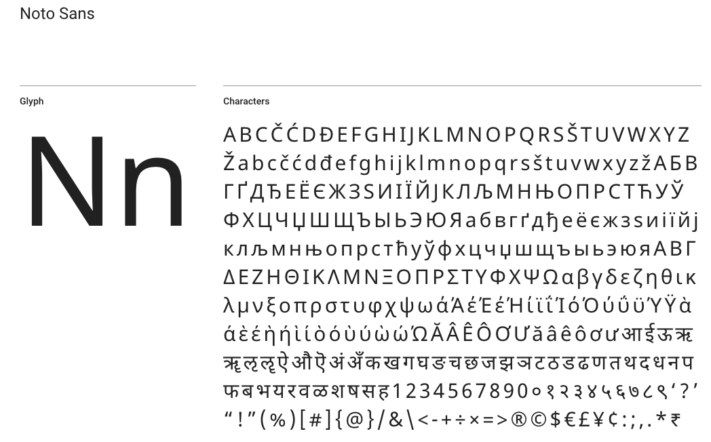
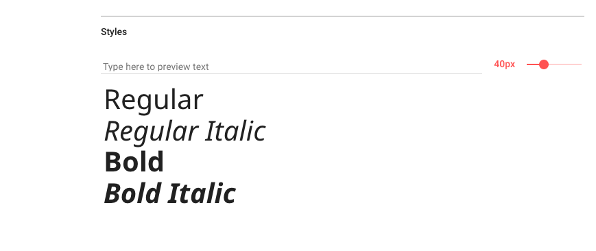

TYPOGRAPHY
Looking the right font will help customers read and find information about the weater and products.
This Font will be use for:
h1, h2, h3.
height 20px
This also have different style
This Font will be use for: paragraph, the footer and section. This will have a line height of 2em.
This also have different style
